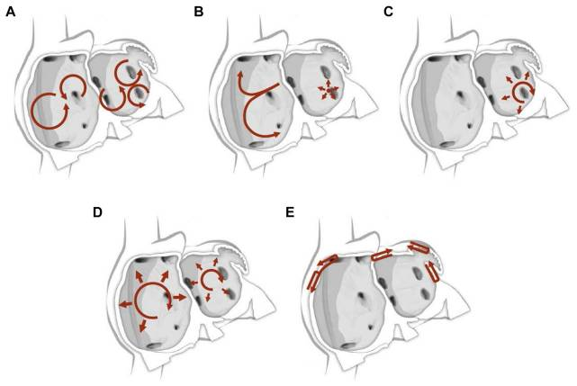
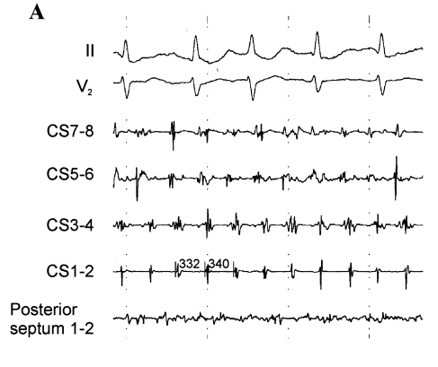
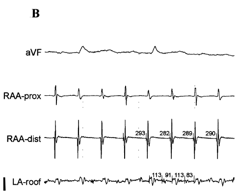
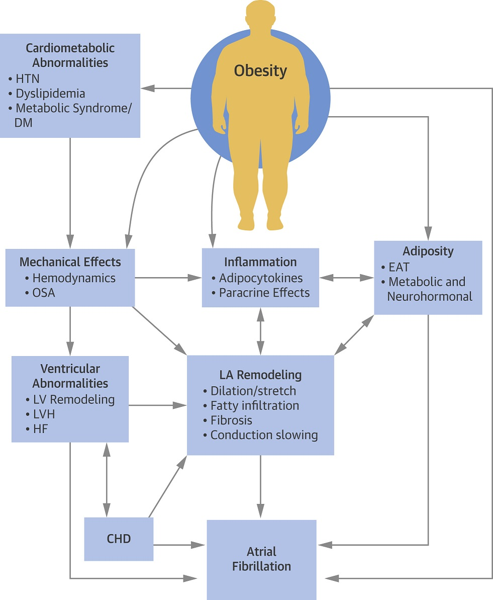
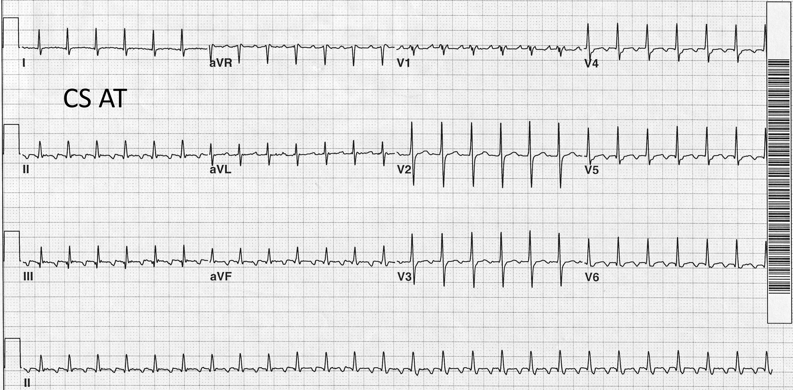

About
Presentation นี้...
- พูดถึงชนิดต่างๆของ atrial arrhythmias เช่น atrial fibrillation | flutter | tachycardia
- ความยากระดับพื้นฐานถึงปานกลาง เน้นที่กลไกการเกิดเป็นหลัก
- มี intracardiac electrogram และ 3D-mapping ร่วมด้วย
- เรื่อง anticoagulation ไม่เน้น
- ดูจบแล้ว น่าจะรู้จักโรคนี้เพิ่มขึ้นไม่มากก็น้อย
- อาจจะงงเพิ่มขึ้นบ้าง แต่น่าจะเป็นจุดเริ่มต้นการเรียนรู้ที่ดี


Atrial Fibrillation = สับสน ไม่สม่ำเสมอ ไม่มีระเบียบ...
ของหัวใจห้องบนทั้งสองห้อง หรืออาจเป็นเฉพาะห้องบนซ้ายห้องเดียวก็ได้
ของหัวใจห้องบนทั้งสองห้อง หรืออาจเป็นเฉพาะห้องบนซ้ายห้องเดียวก็ได้
ถ้าการทำงานของ AV node ปกติ ไฟฟ้าจากหัวใจห้องบนที่เป็น AF จะนำสู่ห้องล่างอย่างไม่สม่ำเสมอ ทำให้ผู้ป่วยภาวะ AF
มีชีพจรที่ไม่สม่ำเสมอ -- totally irregular.
30s
AF ต้องเป็นนานอย่างน้อย 30วินาที
หรือนานพอที่จะบันทึกได้ใน 12-lead ECG.
หรือนานพอที่จะบันทึกได้ใน 12-lead ECG.
ระยะเวลา "30 วินาที" เป็น cutpoint ที่ใช้มาตั้งแต่อดีต และใช้เป็นคำจำกัดความเพื่อการวินิจฉัย AF ในงานวิจัยต่างๆ
ระยะเวลา "30 วินาที" นี้ ไม่มีการศึกษารองรับและไม่มีความสัมพันธ์กับการพยากรณ์โรค
ระยะเวลา "30 วินาที" นี้ ไม่มีการศึกษารองรับและไม่มีความสัมพันธ์กับการพยากรณ์โรค


AF with regular ventricular response
ถ้า AV node ทำงานไม่ปกติ เช่น มี high grade AV block...การนำไฟฟ้าจากหัวใจห้องบนที่เป็น AF ลงมา
ยัง ventricles อาจจะไม่เกิดขึ้นเลย การเต้นของ ventricles ที่เกิดขึ้นจึงเกิดจาก escape rhythm จาก ventricles
เอง ...ซึ่งสม่ำเสมอ

Atrial Fibrillation เกิดได้อย่างไร
คำตอบคือ มีหลายปัจจัยและหลายกลไก ไม่ว่าจะเป็น...อายุ โรคประจำตัวต่างๆ กรรมพันธุ์
กลไกที่ทำให้เกิดมีตั้งแต่ การมีจุดปล่อยไฟฟ้าผิดปกติจาก pulmonary veins, การมีพังผืดในหัวใจห้องบน, ระบบประสาทอัตโนมัติที่ทำงานผิดปกติ และอื่นๆ
กลไกที่ทำให้เกิดมีตั้งแต่ การมีจุดปล่อยไฟฟ้าผิดปกติจาก pulmonary veins, การมีพังผืดในหัวใจห้องบน, ระบบประสาทอัตโนมัติที่ทำงานผิดปกติ และอื่นๆ

Pulmonary venous muscle sleeves: หนึ่งในจุดกำเนิดของ AF
Muscle fibers ที่วิ่งจาก left atrium ไปพันรอบ pulmonary veins (PVs) สามารถเป็นจุดกำเนิดของ AF ได้
โดยใช้กลไกแบบ trigger และ/หรือ automaticity และ/หรือ localized reentry
Focal source ในลักษณะนี้มักจะเป็นกลไกหลักในคนไข้ที่เพิ่งเป็น AF มาในระยะแรก มากกว่าในกลุ่มที่เป็น AF มานานๆ
Focal source ในลักษณะนี้มักจะเป็นกลไกหลักในคนไข้ที่เพิ่งเป็น AF มาในระยะแรก มากกว่าในกลุ่มที่เป็น AF มานานๆ

Focal firing จาก PVs สามารถทำให้เกิดทั้ง premature atrial beats,
premature atrial contraction, และ/หรือ atrial fibrillation ได้
การทำ pulmonary veins isolatation จึงสามารถช่วยลดการเกิดและการคงอยู่ของ AF ที่เกิดจากกลไกนี้ได้

Autonomic Nervous System
Sympathetic และ parasympathetic gangionic plexi มีอยู่อย่างน้อย 7 plexi ที่อยู่บริเวณ left atrium และ PVs
พบว่าการกระตุ้น plexi เหล่านี้ ทำให้เกิด focal firing ออกมาจาก PV และทำให้เกิด AF ได้
อย่างไรก็ดี ประโยชน์ของการจี้ plexi เหล่านี้เพื่อลด AF ในปัจจุบันยังไม่ชัดเจน
พบว่าการกระตุ้น plexi เหล่านี้ ทำให้เกิด focal firing ออกมาจาก PV และทำให้เกิด AF ได้
อย่างไรก็ดี ประโยชน์ของการจี้ plexi เหล่านี้เพื่อลด AF ในปัจจุบันยังไม่ชัดเจน

Electrical Remodelling
เซลที่โดนกระตุ้นจากสัญญาณที่มีความถี่สูงจะเกิดภาวะ Calcium คั่งในเซล และอาจทำให้เซลนั้นๆตายได้
เซลจึงต้องปรับตัวโดยการลดการนำ Calcium เข้าเซล ซึ่งจะทำให้ refractory period ของเซลสั้นลง
การปรับตัวแบบนี้ทำให้เซลอยู่รอด แต่ก็ทำให้ AF เป็นนานขึ้นและเป็นง่ายขึ้น
เซลจึงต้องปรับตัวโดยการลดการนำ Calcium เข้าเซล ซึ่งจะทำให้ refractory period ของเซลสั้นลง
การปรับตัวแบบนี้ทำให้เซลอยู่รอด แต่ก็ทำให้ AF เป็นนานขึ้นและเป็นง่ายขึ้น



Structural Remodelling
AF ถ้าเป็นต่อเนื่องนานๆ จะทำให้เกิด electrical remodelling และ structural remodelling
Structural remodelling เกิดจากการที่มี Calcium คั่งในเซล เซลอักเสบ นำไปสู่การกระตุ้นให้เกิด fibrotic change
เมื่อมีพังผืด (fibrosis) ในกล้ามเนื้อของ atrium จะทำให้การนำไฟฟ้าไม่เป็นระเบียบ มีความเร็วช้าไม่เท่ากัน และไม่ไปในทางเดียวกัน ทำให้มีโอกาสเกิดวงจรไฟฟ้าหมุนวน (reentry) ทั้งเล็กและใหญ่ และทำให้ AF คงอยู่ได้นานขึ้นและหายยากมากขึ้น
บริเวณที่มีการนำไฟฟ้าผิดปกติในลักษณะนี้ มักจะมี local electrogram ที่เป็น complex fractionated atrial electrogram (CFAE)
Structural remodelling เกิดจากการที่มี Calcium คั่งในเซล เซลอักเสบ นำไปสู่การกระตุ้นให้เกิด fibrotic change
เมื่อมีพังผืด (fibrosis) ในกล้ามเนื้อของ atrium จะทำให้การนำไฟฟ้าไม่เป็นระเบียบ มีความเร็วช้าไม่เท่ากัน และไม่ไปในทางเดียวกัน ทำให้มีโอกาสเกิดวงจรไฟฟ้าหมุนวน (reentry) ทั้งเล็กและใหญ่ และทำให้ AF คงอยู่ได้นานขึ้นและหายยากมากขึ้น
บริเวณที่มีการนำไฟฟ้าผิดปกติในลักษณะนี้ มักจะมี local electrogram ที่เป็น complex fractionated atrial electrogram (CFAE)

ยังไม่หมดแค่นี้...
ยังมีปัจจัยจากโรคประจำตัวอื่นๆร่วมด้วย
ยังมีปัจจัยจากโรคประจำตัวอื่นๆร่วมด้วย
Obesity, physical inactivity, ความดันโลหิตสูง, และโรคที่เกี่ยวกับระบบ metabolic อีกหลายๆโรค
สัมพันธ์กับการเกิดและคงอยู่ของ AF
การควบคุมภาวะเสี่ยงเหล่านี้ช่วยลดปริมาณ AF ได้
การควบคุมภาวะเสี่ยงเหล่านี้ช่วยลดปริมาณ AF ได้
หลักการรักษา AF ในปัจจุบันมี 4 ข้อ
1
Rate Control
2
Rhythm Control
3
Thromboembolism Prevention
4
Risk Factors Modification
Catheter Ablation for AF
เราจี้ AF เพื่อลดอาการ และ/หรือเพื่อทำให้ LV function ดีขึ้นในคนไข้ที่สงสัย AF induced cardiomyopathy
นอกจากนี้แล้ว การจี้ AF อาจช่วยลดอัตราการเสียชีวิตในคนไข้ HFrEF บางกลุ่ม
นอกจากนี้แล้ว การจี้ AF อาจช่วยลดอัตราการเสียชีวิตในคนไข้ HFrEF บางกลุ่ม
AF vs. Atrial Flutter(AFL) vs. Atrial Tachycardia (AT)
ทั้ง 3 ภาวะนี้ต่างกันที่กลไกการเกิด
ถ้าดูจาก EKG ในคนที่เป็น AFL หรือ AT จะเห็น P wave ที่มีรูปร่างชัดเจนและสม่ำเสมอกว่าคนที่เป็น AF
ทั้ง 3 ภาวะนี้ อาจมี ventricular rate ที่สม่ำเสมอหรือไม่สม่ำเสมอก็ได้
ถ้าดูจาก EKG ในคนที่เป็น AFL หรือ AT จะเห็น P wave ที่มีรูปร่างชัดเจนและสม่ำเสมอกว่าคนที่เป็น AF
ทั้ง 3 ภาวะนี้ อาจมี ventricular rate ที่สม่ำเสมอหรือไม่สม่ำเสมอก็ได้


Atrial Flutter
เกิดจากวงจรหมุนวนขนาดใหญ่ (Macrorentry) รอบๆจุดศูนย์กลางที่เป็นโครงสร้างที่ไฟฟ้าผ่านไม่ได้
ซึ่งอาจเป็นโครงสร้างปกติในหัวใจ เช่น coronary sinus os
หรืออาจเป็นรอยเย็บหรือรอยแผลเป็นจากการผ่าตัดหรือการจี้ หรืออาจเป็นอุปกรณ์ที่ใส่ในหัวใจ เช่น ASD closure device ก็ได้
**Macrorentry circuit = more than 2 sq.cm. in diameter
**Macrorentry circuit = more than 2 sq.cm. in diameter


Cavotricuspid isthmus dependent atrial flutter
เป็น AFL ที่พบได้บ่อยที่สุด โดยวงจรหมุนวนอยู่บริเวณด้านหน้าของ right atrium รอบๆ tricuspid annulus
ส่วนด้านหลัง วงจรไม่สามารถวิ่งครบวงได้ เพราะมี Crista Terminalis เป็นตัวกันไม่ให้ไฟฟ้าวิ่งผ่าน
มากกว่า 80% ของวงจรนี้จะวิ่งทวนเข็มนาฬิกา (ให้มอง tricuspid annulus เป็นหน้าปัดนาฬิกา) ทำให้เกิดลักษณะเฉพาะ ที่เห็นใน EKG ที่มี flutter wave ที่เป็นฟันเลื่อย ที่เราเรียกกันว่า "typical flutter"
วงจรนี้มีส่วนที่แคบที่สุด และเป็นส่วนที่เชื่อมต่อวงจรทั้งหมด (critical isthmus) ที่ floor ของ right atrium ส่วนที่เชื่อมระหว่าง IVC และ tricuspid annulus = Cavotricuspid Isthmus
มากกว่า 80% ของวงจรนี้จะวิ่งทวนเข็มนาฬิกา (ให้มอง tricuspid annulus เป็นหน้าปัดนาฬิกา) ทำให้เกิดลักษณะเฉพาะ ที่เห็นใน EKG ที่มี flutter wave ที่เป็นฟันเลื่อย ที่เราเรียกกันว่า "typical flutter"
วงจรนี้มีส่วนที่แคบที่สุด และเป็นส่วนที่เชื่อมต่อวงจรทั้งหมด (critical isthmus) ที่ floor ของ right atrium ส่วนที่เชื่อมระหว่าง IVC และ tricuspid annulus = Cavotricuspid Isthmus


Typical atrial flutter
Macro-reentry; the atrial activation covers >70% of the entire cycle length.
Atypical atrial flutter or Macro-reentrant atrial tachycardia

เป็นวงจรหมุนวนขนาดใหญ่ วิ่งรอบโครงสร้างอื่นๆที่ไม่ใช่ tricuspid annulus
การบอกตำแหน่งของวงจรของ atypical flutter ด้วย ECG ทำได้ยากมากๆ หรือแม้แต่การวินิจฉัย typical flutter ด้วย ECG ในคนไข้ที่เคยผ่าตัดหัวใจมาแล้วก็ทำได้ไม่ง่ายนัก
การบอกตำแหน่งของวงจรของ atypical flutter ด้วย ECG ทำได้ยากมากๆ หรือแม้แต่การวินิจฉัย typical flutter ด้วย ECG ในคนไข้ที่เคยผ่าตัดหัวใจมาแล้วก็ทำได้ไม่ง่ายนัก
Case: 39F s/p surgical ASD repair when she was 9 years old, presents with recurrent palpitation.


Not much you can tell from the ECG.

Entrainment ช่วยให้ idea คร่าวๆว่าวงจรอยู่แถวไหน
3D electroanatomical mapping
ให้รายละเอียดเพิ่ม
ให้รายละเอียดเพิ่ม
ในเคสนี้ วงจร flutter วิ่งวนรอบ surgical scar
บริเวณด้านข้างของ right atrium
บริเวณด้านข้างของ right atrium
Focal atrial tachycardia


กลไก: automaticity, triggered, หรือ micro-reentry ...มีจุดกำเนิดไฟฟ้าจากบริเวณใดบริเวณหนึ่งใน
atrium ปล่อยกระแสไฟฟ้าให้กระจายไปรอบๆ
ส่วนใหญ่แล้ว Focal AT มักพบในคนไข้ที่ไม่มี structural heart disease และตำแหน่งที่เป็นจุดกำเนิดมักจะมาจาก right atrium โดยเฉพาะบริเวณ Crista Terminalis
**micro-reentry circuit: less than 2 sq.cm in diameter, entrainable, and able to map from >70% of cycle length; but use the same ablation approach as automaticity or triggered mechanisms.
ส่วนใหญ่แล้ว Focal AT มักพบในคนไข้ที่ไม่มี structural heart disease และตำแหน่งที่เป็นจุดกำเนิดมักจะมาจาก right atrium โดยเฉพาะบริเวณ Crista Terminalis
**micro-reentry circuit: less than 2 sq.cm in diameter, entrainable, and able to map from >70% of cycle length; but use the same ablation approach as automaticity or triggered mechanisms.
Focal atrial tachycardia examples


Focal vs. Micro vs. Macro-reentry
| Characters | Focal | Microreentry | Macroreentry |
|---|---|---|---|
| Most Common heart diseases | None | AF s/p RFA | CAD, AF s/p RFA |
| ECG isoelectric interval | Yes | Yes | No |
| Record from >80% of CL | No | Yes | Yes |
| Entrain with PPI-TCL<20ms, 2sites >2cm apart | No | No | Yes |
| Activation Pattern | Radial | Radial | Large Loop |
| Ablation Approach | Focal | Focal | Linear |
Radial Activation Pattern ใน focal หรือ micro-reentry mechanisms
สังเกตว่าจากจุดเริ่มต้นของ tachycardia ไปจนถึงจุดสุดท้ายที่ map ได้ใน left atrium
รวมแล้วเป็นระยะเวลาน้อยกว่า 70% ของ tachycardia cycle length
Case: 44F s/p heart transplant 8 years ago; bicaval technique, presents with palpitation.


ECG suggested non-sinus rhythm. EGM confirmed atrial tachycardia/flutter with
1:1 conduction.
Noted in "*" with probable electrical activity from the old heart.
Noted in "*" with probable electrical activity from the old heart.


?mechanism: micro-reentry vs focal
เคสนี้ map ใน RA ได้ 221ms แต่ tachycardia cycle length = 310ms แต่เนื่องจาก scar tissue เยอะ อาจจะ map ได้ไม่ครบ???
Propagation map ดูเหมือนจะมีวง reentry เล็กๆ รอบ IVC + scar
แต่ไม่ว่าจะเป็น focal หรือ micro-reentry ก็จี้เหมือนกัน
เคสนี้ map ใน RA ได้ 221ms แต่ tachycardia cycle length = 310ms แต่เนื่องจาก scar tissue เยอะ อาจจะ map ได้ไม่ครบ???
Propagation map ดูเหมือนจะมีวง reentry เล็กๆ รอบ IVC + scar
แต่ไม่ว่าจะเป็น focal หรือ micro-reentry ก็จี้เหมือนกัน
Focal ablation at the earliest point resulted in termination of the tachycardia.


3D mapping helps..but only in those who understand the arrhythmias.